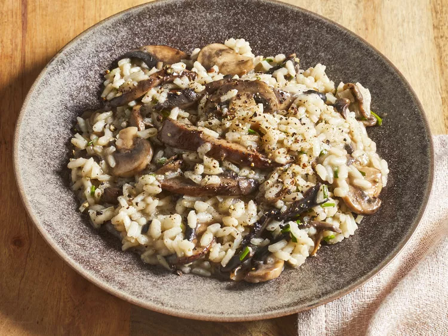

Mushroom Risotto
Home

A creamy, savory Italian dish that is pure comfort food. It starts with sauteed onions
and garlic, followed by Arborio rice slowly cooked in a flavorful broth while stirring
continuously. Sliced mushrooms are added to the mix, infusing the risotto with their
richness. As the rice absorbs the broth, it becomes tender and creamy.
Ingredients
- 6 cups chicken broth, or as needed
- 3 tablespoons olive oil, divided
- 1 pound portobello mushrooms, thinly sliced
- 1 pound white mushrooms, thinly sliced
- 2 medium shallots, diced
- 1 ½ cups Arborio rice
- ½ cup dry white wine
- 4 tablespoons butter
- 3 tablespoons finely chopped chives
- ⅓ cup freshly grated Parmesan cheese
- sea salt and freshly ground black pepper to taste
Steps
- Warm broth in a saucepan over low heat. Meanwhile, warm 2 tablespoons olive oil in a large saucepan over medium-high heat. Add portobello and white mushrooms; cook and stir until soft, about 3 minutes. Remove mushrooms and their liquid to a bowl; set aside.
- Add remaining 1 tablespoon olive oil to the saucepan. Stir in shallots and cook for 1 minute. Add rice; cook and stir until rice is coated with oil and pale, golden in color, about 2 minutes.
- Pour in wine, stirring constantly until wine is fully absorbed. Add 1/2 cup warm broth to the rice, and stir until the broth is absorbed.
- Continue adding broth, 1/2 cup at a time, stirring constantly, until the liquid is absorbed and the rice is tender, yet firm to the bite, about 15 to 20 minutes.
- Remove from heat. Stir in reserved mushrooms and their liquid, butter, chives, and Parmesan cheese.
- Season with salt and pepper and serve immediately.